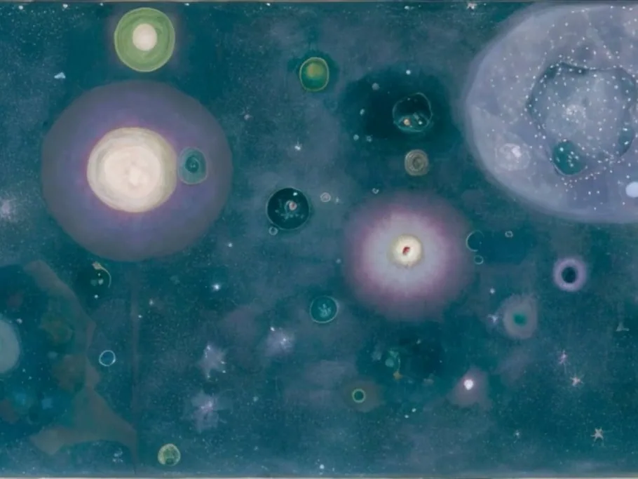
Begin with Pieces
诗歌、声音与绘画交织成一片不断变化的内在风景。
作品
动画、物件与绘画，以及我们为彼此创造的空间。
01 · 影像

诗歌、声音与绘画交织成一片不断变化的内在风景。
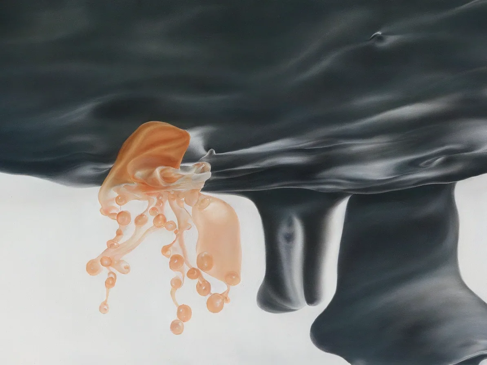
诗歌与流动影像，进入一个思绪满溢的内心世界。
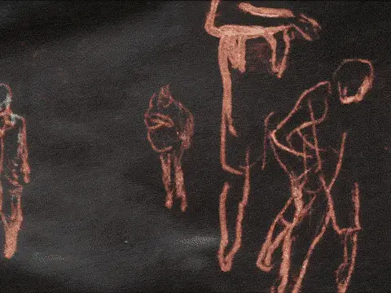
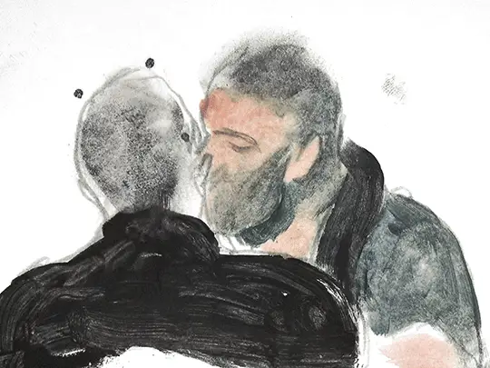
以逐帧手绘，留住两名男性之间一段未被回应的爱。
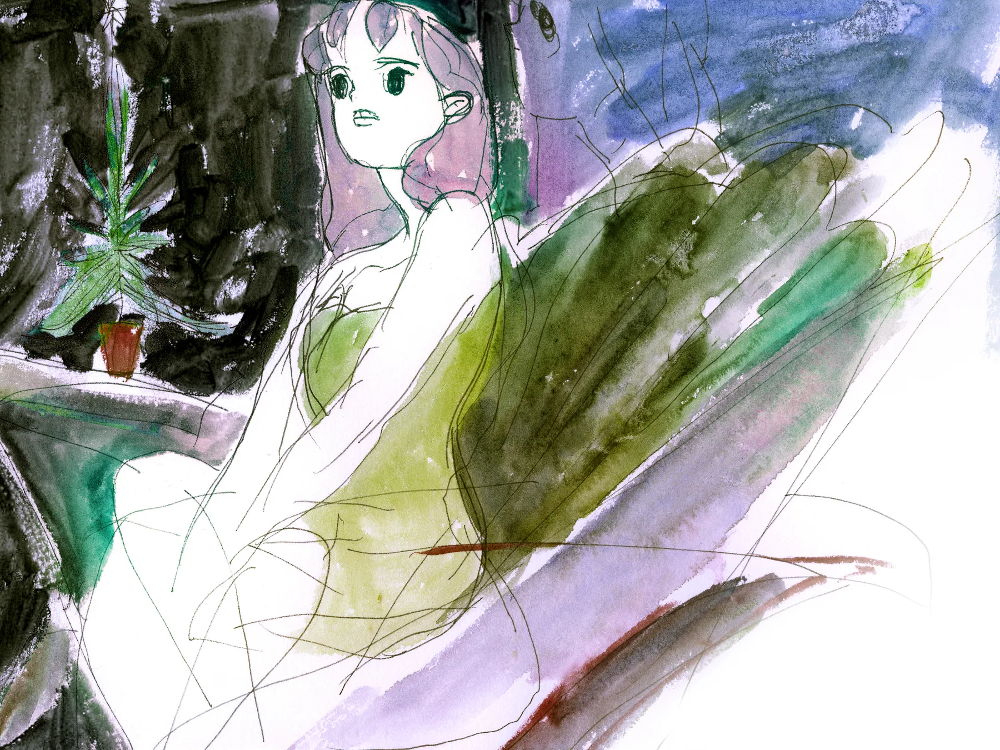
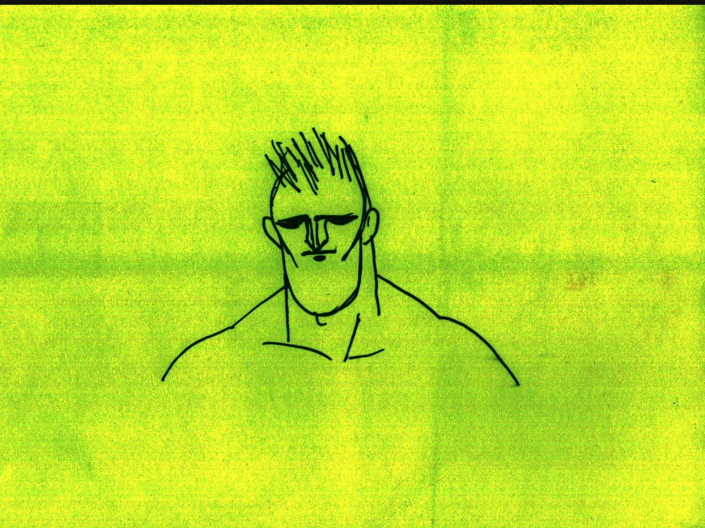
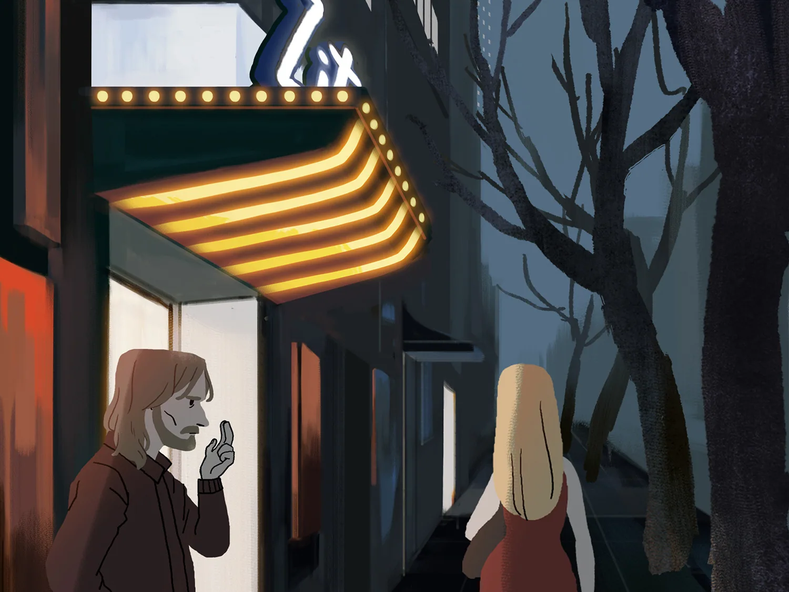
02 · 物件与地方
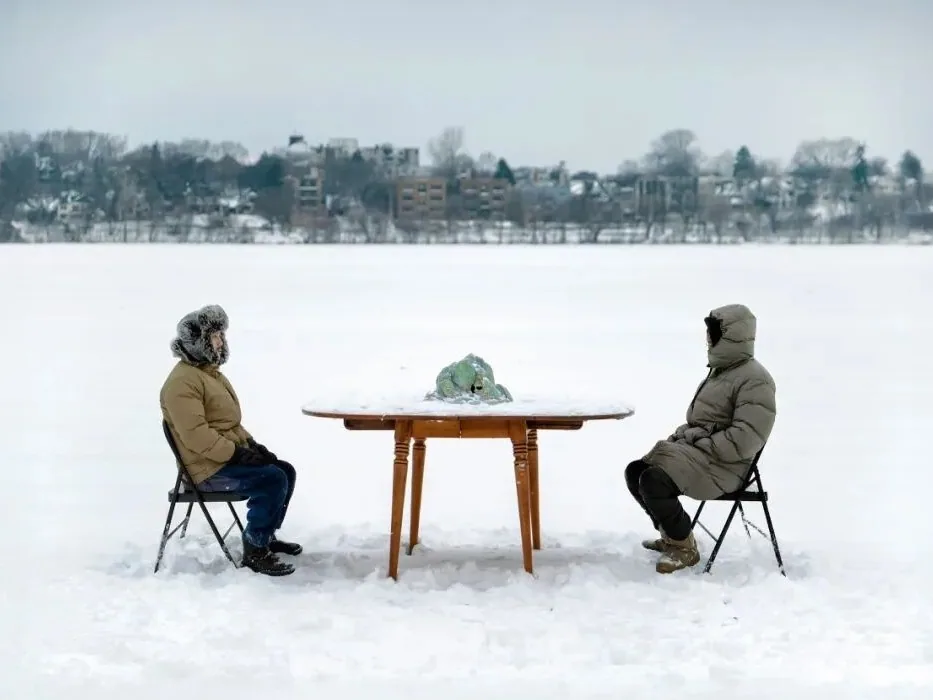
一座陶山、一片冰湖，以及关于离散与归属的追问。
04 · 社区、教学与组织
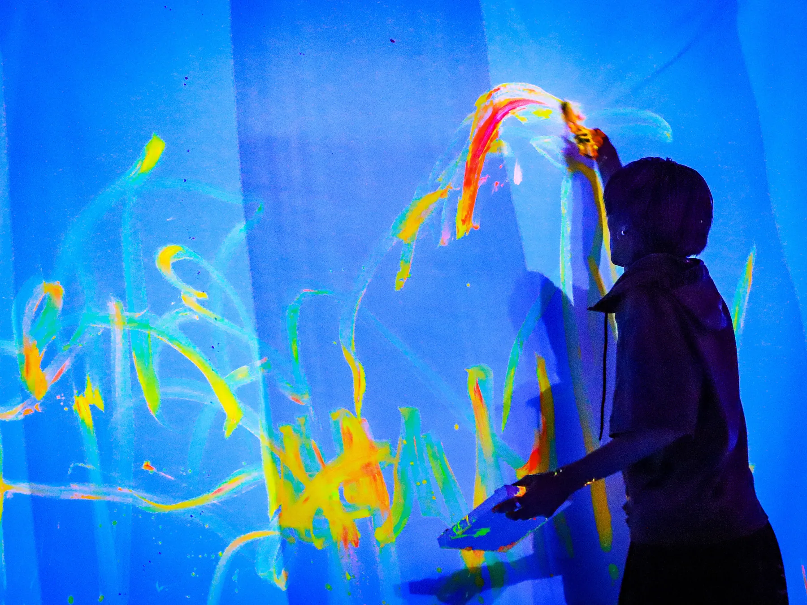
2019 年共同发起的独立动画节，从北京连接国际独立动画创作者社区。
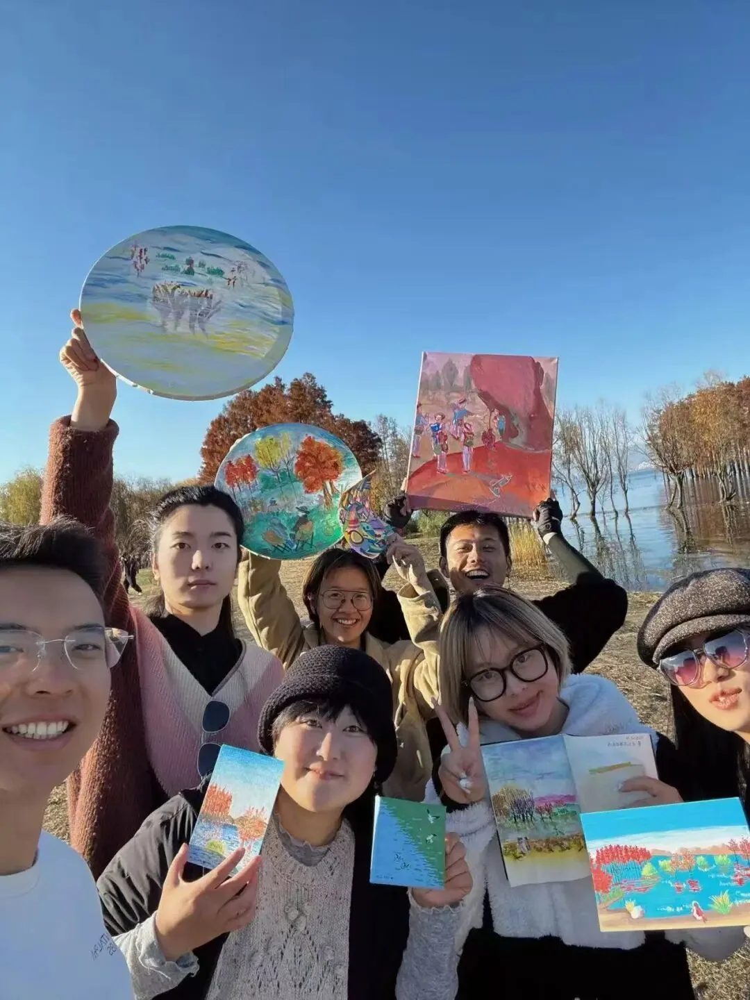
主理 706 驻地大理的社区，为不断离开又回来的人设计一套「社区操作系统」。
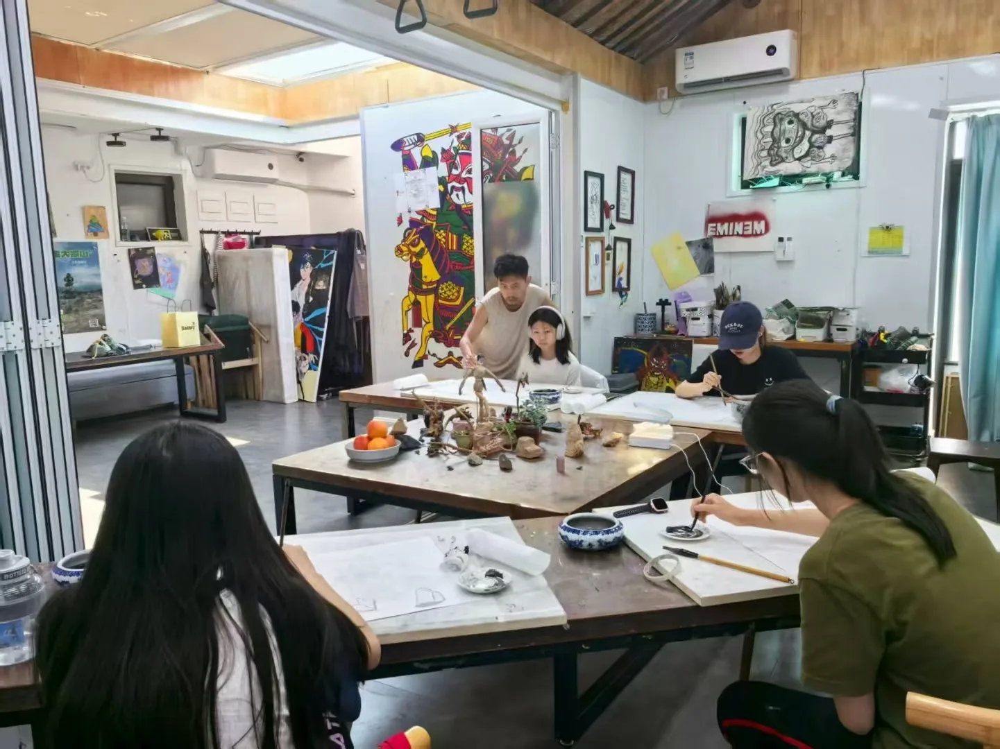
在中美两地的美术馆、营地与社区空间教学，从儿童定格动画到成人分镜创作。
05 · 绘画与观察